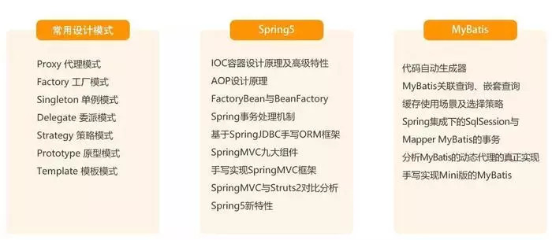
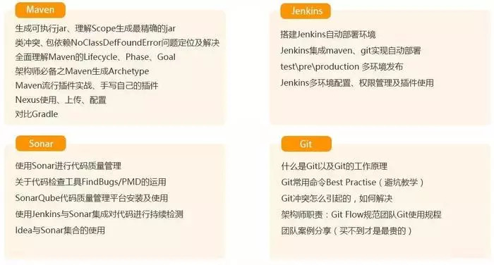
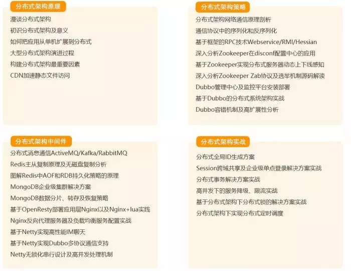
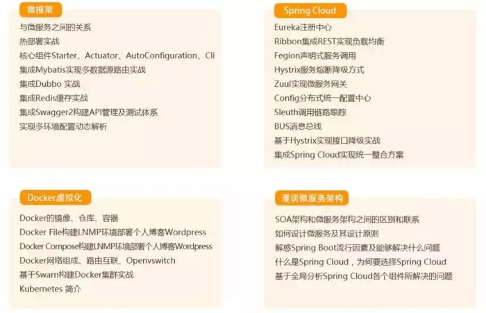
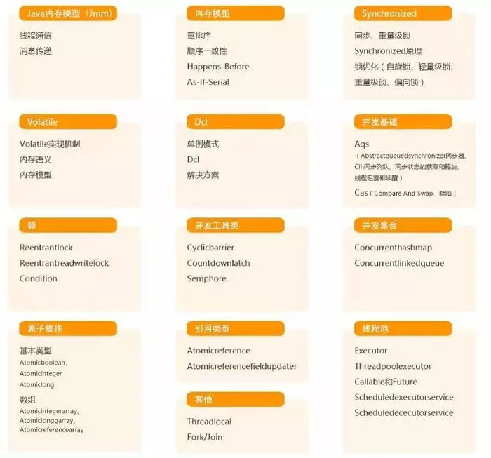

(转)JAVA技术体系-1
一：常见模式与工具
学习Java技术体系，设计模式，流行的框架与组件是必不可少的：
- 常见的设计模式，编码必备
- Spring5，做应用必不可少的最新框架
- MyBatis，玩数据库必不可少的组件

二：工程化与工具
工欲善其事必先利其器，不管是小白，还是资深开发，玩Java技术体系，选择好的工具，提升开发效率和团队协作效率，是必不可少的：
- Maven，项目管理
- Jenkins，持续集成
- Sonar，代码质量管理
- Git，版本管理

三：分布式架构
高并发，高可用，海量数据，没有分布式的架构知识肯定是玩不转的：
- 分布式架构原理
- 分布式架构策略
- 分布式中间件
- 分布式架构实战

四：微服务架构
业务越来越复杂，服务分层，微服务架构是架构升级的必由之路，Java技术体系，和微服务相关的技术有哪些呢？
- 微服务框架
- Spring Cloud
- Docker与虚拟化
- 微服务架构

五：底层知识
从架构设计，到应用层调优，再深入了解底层原理，扎实的Java基本功才能让自己变为扫地神僧：
- 内存模型
- 并发模式
- 线程模型
- 锁细节
